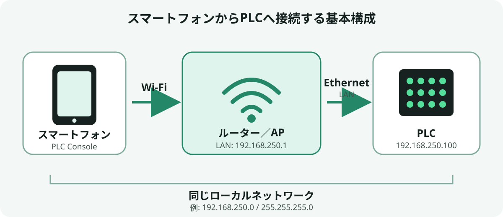

既設LANにアクセスポイントを追加
既設の PLC 用 LAN にアクセスポイントを接続します。アクセスポイントは AP／ブリッジモードを使用し、スマートフォンと PLC を同じネットワークへ接続します。
Wi-Fi / Network
スマートフォンから Wi-Fi 経由で PLC に接続するための、ルーター／アクセスポイントと IP アドレスの構成例です。

PLC 通信にインターネット接続は必要ありません。設備付近の管理されたローカルネットワークで使用します。
既設の PLC 用 LAN にアクセスポイントを接続します。アクセスポイントは AP／ブリッジモードを使用し、スマートフォンと PLC を同じネットワークへ接続します。
PLC をルーターの LAN ポートへ接続し、スマートフォンをそのルーターの Wi-Fi へ接続します。WAN ポートやインターネット回線は使用しません。
次は独立したネットワークを新しく構成する場合の例です。既設LANへ接続する場合は、使用中のアドレスと重複しない値を使用してください。
192.168.250.1 / 255.255.255.0192.168.250.100 / 255.255.255.0192.168.250.10 ～ 192.168.250.99 の範囲から割り当てます。192.168.250.100、Port に PLC 側で設定したポート番号を入力します。スマートフォンと PLC が同じサブネット内にある場合、PLC のデフォルトゲートウェイは通信に使用しません。
到達できない場合は、スマートフォンに割り当てられた IP アドレス、サブネット、接続中の SSID、端末間通信の制限、PLC の IP とポートを確認してください。
PLC の通信ポートをインターネットへ公開しないでください。ポート転送、VPN、公衆 Wi-Fi を使用せず、設備付近のローカルネットワークから接続します。